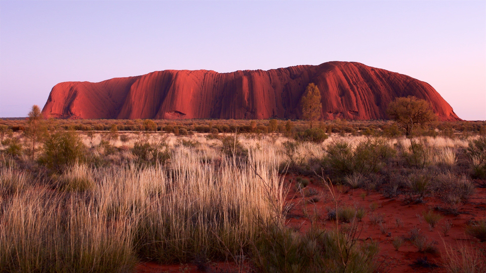

Australia
Galeria



Sobre
A cultura australiana, em grande parte, é derivada de raízes europeias, mas características australianas distintivas evoluíram no ambiente, cultura aborígene, e a influência de vizinhos da Austrália. O vigor e originalidade das artes em filmes da Austrália, ópera, música, pintura, etc.., estão alcançando reconhecimento internacional. O principal traço distintivo cultural da Austrália é proveniente dos aborígenes que formam um pouco mais de 2,7% da população atual, e é um dos países de destaque para turismo.
Viagens em Destaque
-
Itália
-
França